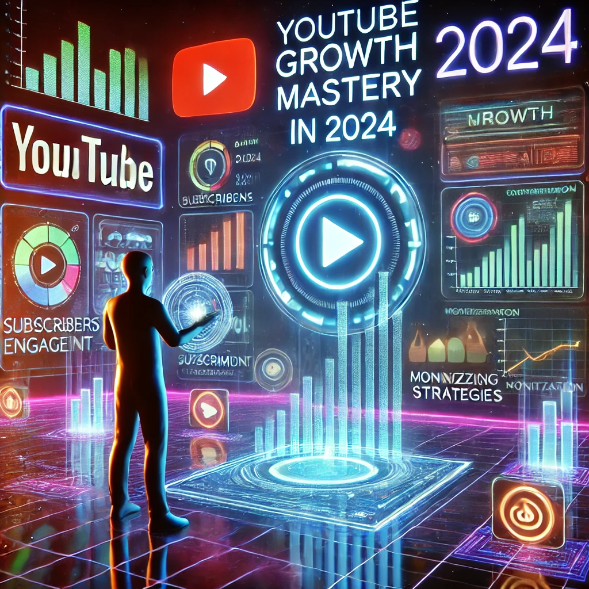

Mastering YouTube Growth in 2024: A Comprehensive Guide for Content Creators

In the dynamic and ever-evolving world of digital content, YouTube remains one of the most powerful platforms for creators to share their passion, expertise, and creativity. However, success on YouTube requires more than just uploading videos and hoping for the best. It demands a strategic approach, consistency, and a deep understanding of how the platform works. This guide breaks down the critical steps and mindsets needed to cultivate a thriving YouTube presence, offering proven strategies for both new and experienced creators.
The Foundation: Understanding YouTube's Core Mechanics
Before diving into content creation, it’s essential to understand how YouTube operates. YouTube is fundamentally a "click and watch" platform. Crafting compelling titles and thumbnails is just as important as the content itself. A great video that no one clicks on will go unnoticed. This is why optimizing these elements is crucial for increasing visibility and attracting viewers.
Mastering the Algorithm: Metrics That Matter
While subscriber count is a common measure of success, it’s not the most critical metric for YouTube’s algorithm. Instead, average views per video, watch time, and viewer retention play a more significant role in promoting your content. Focus on improving these metrics by creating engaging content that keeps viewers hooked from start to finish.
The 50-Video Milestone: Building Experience and Momentum
Don't get bogged down by perfectionism when starting. Your initial goal should be to create and publish 50 videos. This milestone is less about immediate success and more about finding your voice, refining your production process, and identifying what resonates with your audience. These early videos are your foundation, a learning phase that will prepare you for long-term growth.
The Long Game: Patience and Persistence
YouTube success is a marathon, not a sprint. Setting a realistic timeframe of 18 months to two years is key to building a solid foundation. During this period, focus on refining your content, learning from your audience, and growing organically. Rapid success stories are rare; most channels that flourish do so through consistent effort and gradual improvement.
Crafting Content: From Idea to Execution
The Power of Ideation
Successful channels dedicate a significant amount of time to brainstorming and planning. Set aside approximately 10% of your time to ideation. Investing in strong ideas will pay dividends in the quality and consistency of your content, providing a roadmap for future videos and ensuring thematic coherence across your channel.
The Art of the Intro
Viewer retention is crucial, and it starts with the first 60 seconds. Skip the lengthy greetings and jump directly into the content. Hook viewers immediately by addressing the value you’ll provide. For example, instead of saying, "Hey guys, welcome back," start with a captivating statement or question that directly relates to your topic. This approach instantly signals to the viewer that they’re in the right place.
Building a Content Catalog: Consistency and Thematic Overlap
Aim to create a content catalog where each video connects to your overall channel strategy. At least 80% of your videos should have thematic overlap, creating a cohesive channel identity. This not only helps with audience retention but also signals to YouTube's algorithm that your channel consistently covers specific topics, making it easier for the platform to recommend your content to the right audience.
Thumbnails and Titles: Optimizing Click-Through Rates
Your thumbnail and title are the gateways to your video. Create multiple thumbnail options for each video and A/B test them to determine which performs best. The more appealing and relevant your thumbnail, the higher the chances viewers will click. Treat this as an ongoing experiment—what works for one video might not work for another, so be prepared to adapt and optimize.
Audience Engagement: Building a Loyal Following
Understanding Your Viewers
Your audience consists of three main groups: core fans, casual viewers, and new visitors. Successful creators balance content that caters to all three. Provide familiar content for loyal followers while making it accessible enough for newcomers. Diversify your approach within your niche to keep your channel fresh and engaging for all viewer types.
Delivering Value Before Asking for Engagement
While it’s tempting to ask for likes, subscriptions, and shares early in your video, earn your viewer's trust first. Provide valuable content before making requests. This strategy not only builds credibility but also increases the likelihood of viewers engaging organically. Remember, YouTube’s algorithm favors videos that viewers find valuable and satisfying, so prioritize content quality over self-promotion.
Monetization: Focus and Patience
In the early stages of your YouTube journey, your primary goal should be to grow your viewership and build a loyal audience. Prematurely diversifying into merchandise or other revenue streams can dilute your focus. Instead, concentrate on maximizing ad revenue and securing brand deals as your primary income sources once you've built a substantial audience.
Continuous Improvement: The Key to Sustained Growth
Marginal Gains
Adopt a philosophy of continuous, marginal improvements. With each upload, strive to enhance an aspect of your content—be it the audio quality, editing, storytelling, or viewer engagement—by just 1%. These small, consistent tweaks compound over time, leading to significant growth in both production quality and audience satisfaction.
Analyzing Performance
Regularly review your analytics to understand what’s working and what isn’t. Pay close attention to metrics like audience retention, click-through rate, and average view duration. Use this data to refine your approach and make informed decisions about future content.
Self-Reliance: Mastering the Basics
In the beginning, resist the temptation to outsource tasks. There is immense value in understanding every aspect of YouTube content creation, from ideation and filming to editing and thumbnail design. This hands-on experience will not only make you a more versatile creator but also allow you to maintain control over your brand's vision.
Crafting Your Niche: Choosing and Committing
The niche you select plays a substantial role in your growth potential. While niches like entertainment and gaming offer broad audiences, they are highly competitive. Choose a niche you are passionate about and commit to it for at least 50 videos before considering a pivot. Consistency within your niche helps YouTube’s algorithm understand and promote your content to the right viewers.
Going Beyond Views: Fostering Engagement and Conversion
Views are important, but engagement and conversion are what sustain and grow your channel. Create content that encourages viewers to take further actions, like commenting, subscribing, or visiting your website. Engagement metrics signal to YouTube that your content is valuable, increasing its chances of being recommended.
Conclusion: Your Roadmap to YouTube Success
Success on YouTube is not just about creating content; it's about creating content that resonates with your audience, optimizing for discovery, and delivering consistent value. By understanding YouTube's mechanics, focusing on audience engagement, and committing to a long-term strategy, you position yourself for growth. Stay patient, stay focused, and keep creating. With the right approach, your dedication will pay off as you build a thriving YouTube channel that not only entertains but also connects with viewers on a deeper level.